网安与数值
数据有价值吗？
以前，我们很难认为数据是有价值的。现在越来越多的人开始意识到数据的价值。
百度CEO李彦宏曾言，中国人喜欢用隐私换便利。
李是一个典型的技术直男，想到什么说什么，所以被大家喷了。但反过来想，难道不是这样的环境才能诞生这样的公司吗？
载舟覆舟的道理大家都懂，社会进步一定是民智大开，愚民政策可能便于管理者，但并不利于社会进步，所以我们没必要为“奶头乐”叫好。所以在这里，我愿意为大家作一点点科普。
当我们看到一个新闻，首先要看时间地点人物三要素，其次要问是不是，最后再问为什么。
那么选取最近的数据安全新闻来看看~
新闻1-4850W
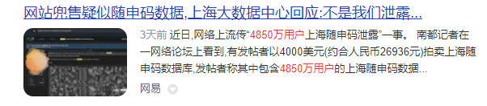
当然这条新闻现在已经被和谐掉了，点进去就是404，但我们还是想看看是不是真的有这种事。
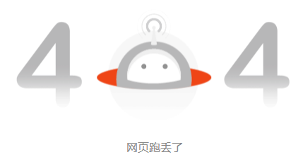
于是爬上梯子来到这个传说中的网站，不看不知道，一看吓一跳。
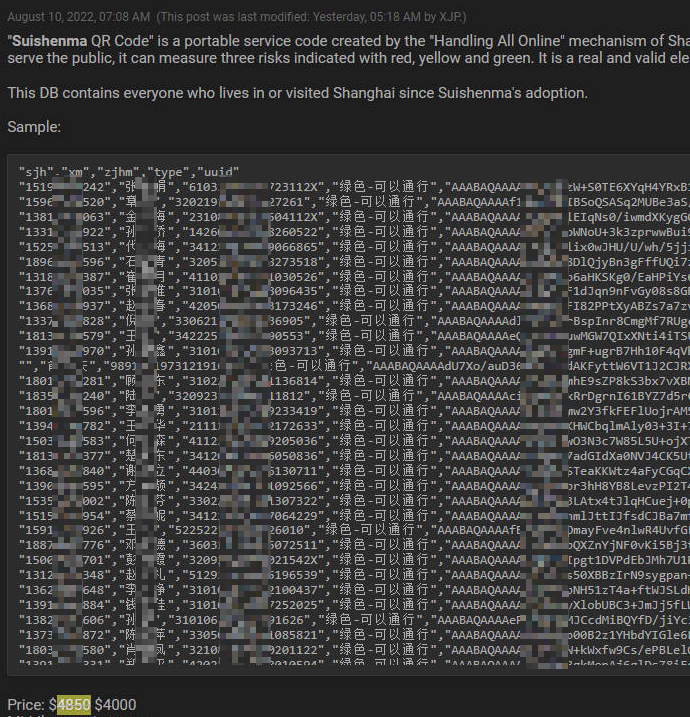
22年8月10日泄露的部分包括手机号、姓名、身份证以及唯一识别码UUID，标价$4k，数据量声称有4850w，但是没看到更大的sample，如果属实，SH2500w人可以说是内裤都被扒没了……
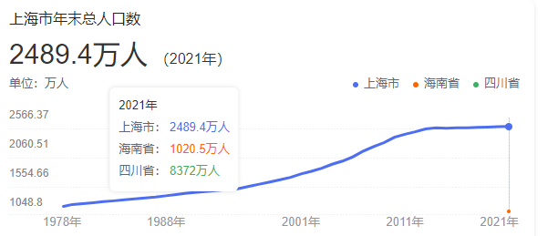
你以为这就完了么？并没有！
8月13日，帖子作者再次上传新的数据，包含了从SH二维码发明以来到22年3月的所有人到扫码记录！等于说完美避开了静默管理：）
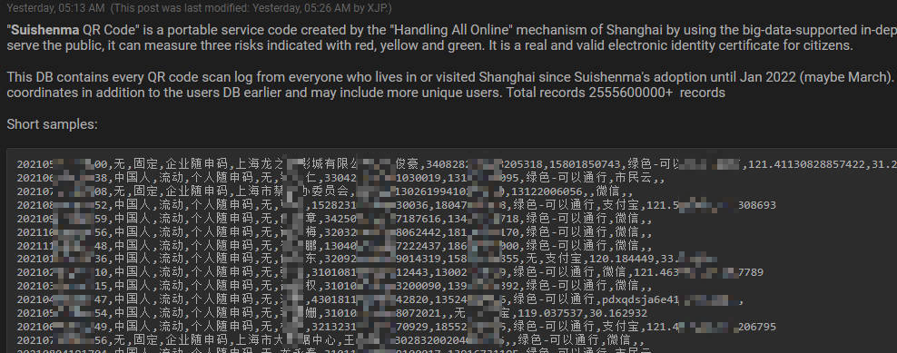
这个数据里除了前一个帖子的已经有的种类，还新增了国籍判断、扫码时间、扫码软件、GPS信息，数据总量高达25.5亿！开价$15w，并且已经进入拍卖，价高者得，最低加价$1k
当然这里面有不少重复的信息，去重后差不多就是那4850w的量。不过新增的时间和GPS信息，可以准确描绘一个人的行动轨迹……假如有别有用心的人想针对某个人，这个数据简直不要太有用……
到这里我突然蹦出一个想法：领导们会用这个系统吗？
如果答案是会，那危。所以，答案肯定是不会（但有种莫名的忧桑是怎么肥事= =!）。
新闻2-10亿
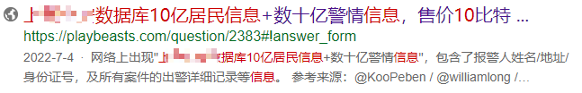
其实这条新闻才是我要讲的重点，wikipedia里已经详细说明了来龙去脉。
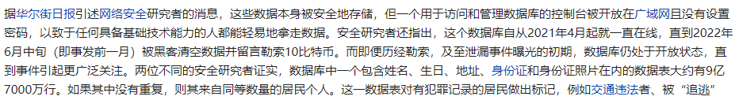
那么让我们看看泄露了哪些信息，以下是论坛里楼主给出的文件格式预览。
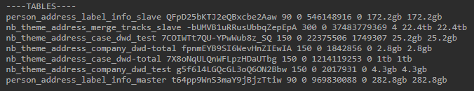
看起来包括了人物的基本信息以及公司、案件信息。后面楼主发布了一个750k的sample，里面有3个文件，分别是人物、案件和电话，各自250k行。由于是部分文件，彼此关联性并不高，而且有大量不完整的信息。所以我们对数据脱敏处理，进行解读。
首先价值最高的就是人物信息，我们看看这250k数据中能找出些什么~
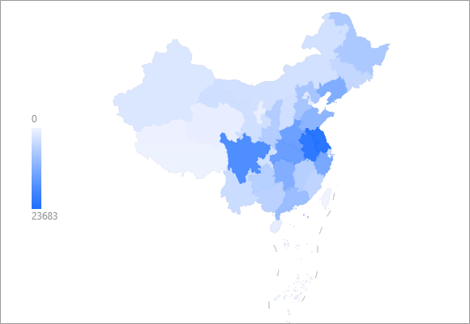
地域分布（根据户口所在地），排名依次是江苏-安徽-四川，看得出包邮区人民的热情，但没想到四川人民也这么喜欢SH
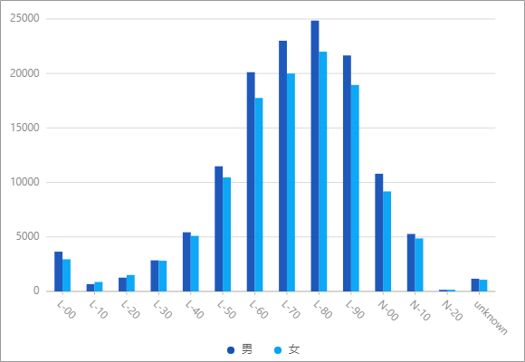
年龄分布-性别分布，虽然是随机的数据，但人口下降的着实比升的时候还快，人口危机并不是危言耸听。
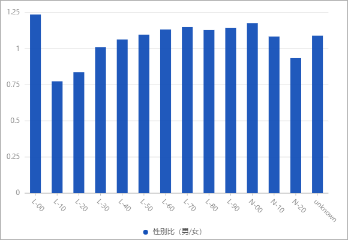
直到10后还保持着男多女少，可见重男轻女的传统，没那么容易改变。
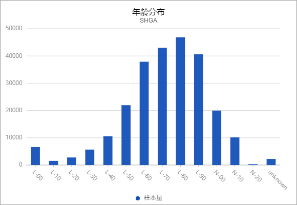
再贴一张总人数的，90后开始断崖式下跌，说是腰斩也不过分。
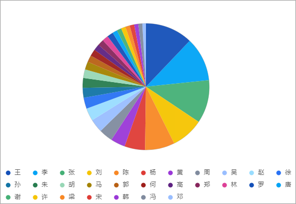
最后来张趣味性的图，你知道我国最大的姓氏吗？没错，就是王！
要不怎么老说隔壁老王呢，群众的智慧就在这里，遥遥领先的姓氏！图里排名分先后，看看你的姓氏能排第几~
其实剩下的2个文件价值并不高，一个里面就是一些电话号码，另一个就是记录的案件信息，比如谁谁谁偷电瓶车了，谁当隔壁老王了，而且很多信息最后都说无情况，挺无聊的。
目前数据已经扩散，深网上售价只有$1k，（一开始可是高达10BTC！）我相信很多国家很多地区都掌握了这一数据。
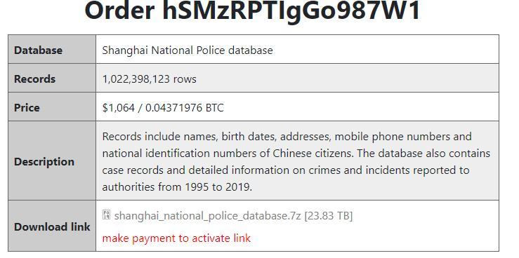
数据是怎么泄露的呢？上面的截图已经说了，是数据库没有设置密码。但小道消息说是技术员在写CSDN博客时候直接上传了包含密钥token的代码，等于说我把保险箱的密码公开给所有人看……简直离谱，离天下之大谱！
这就是我们数据维护人员的水准吗？这已经不是他在裸奔了，而是让我们数十亿中国人一起在全世界裸奔……
那么我现在只剩下了最后一个问题……数据库暴露数月，能搬的数据应该都搬空了，为什么只有不到10亿条数据呢？难道说SH只有这么点数据？还是说我们其实只剩不到10亿人？或者说普查数据并不全面，都是推算的？
last-保护
最后，我们如何才能保护自己的数据呢？
恐怕无能为力 …… :(
只能尽可能少暴露自己吧。三体名言：藏好自己，做好清理……